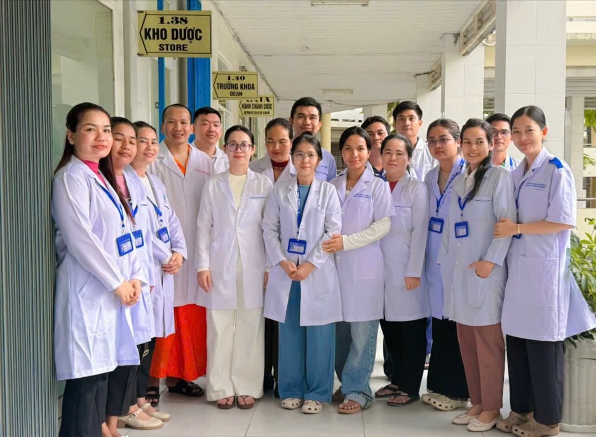
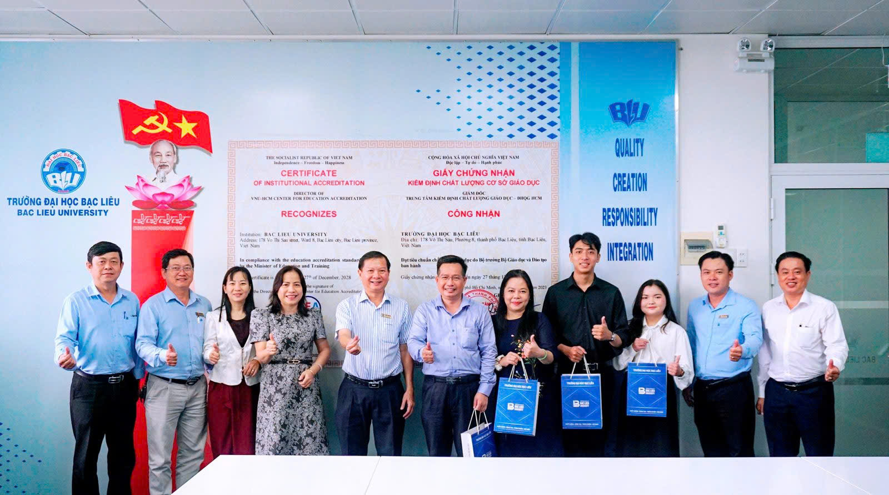

Trường Trung cấp
Miền Tây
Catalogue tuyển sinh 2026
Trường Trung cấp
Miền Tây
Catalogue tuyển sinh 2026
Trường Trung cấp Miền Tây (MTPC) là cơ sở giáo dục nghề nghiệp đào tạo và phát triển nguồn nhân lực có chuyên môn, kỹ năng nghề nghiệp, đáp ứng nhu cầu thị trường lao động với phương châm lấy người học làm trung tâm.


Trở thành cơ sở giáo dục nghề nghiệp có uy tín tại ĐBSCL, mở rộng hợp tác trong và ngoài nước, gắn đào tạo thực hành với doanh nghiệp, cơ sở y tế và nhu cầu xã hội.
Trang bị kiến thức chuyên môn, kỹ năng và đạo đức nghề để người học có tay nghề, tác phong chuyên nghiệp và khả năng phát triển lâu dài.
Tri thức · Đạo đức · Hội nhập · Phát triển
Rèn kỹ năng nghề, tác phong và kỷ luật qua bài tập thực hành.
Trung cấp, khóa bồi dưỡng và chứng chỉ theo từng chương trình.
Cấp theo điều kiện tốt nghiệp hoặc hoàn thành khóa học.
Cung cấp thông tin về cơ hội thực tập và việc làm.
Có lớp ban ngày, buổi tối và cuối tuần. Lịch cụ thể theo từng lớp.
Môi trường học tập thân thiện, lấy người học làm trung tâm, rèn luyện kỹ năng nghề
Trung cấp và các khóa ngắn hạn theo nhu cầu học nghề.
Hợp tác chuyên môn với ĐH Y Dược Cần Thơ và CĐ Nghề Cần Thơ.
Khai giảng các lớp Y sĩ, Dược và Điều dưỡng cho học sinh Campuchia năm 2025.
Ảnh ngành CNTT là minh họa AI.
Trình độ trung cấp
Lưu ý hành nghề: Người được cấp bằng Y sĩ trung cấp sau 31/12/2026 không được cấp giấy phép hành nghề với chức danh Y sĩ (khoản 10 Điều 121).
Trình độ trung cấp
Trang bị kiến thức về dược lý, dược lâm sàng, bào chế, kiểm nghiệm, bảo quản và quản lý thuốc trong phạm vi chuyên môn.


Trình độ trung cấp
Chăm sóc người bệnh trong phòng bệnh, điều trị và phục hồi.
Định hướng AI
Trung cấp chính quy · Mã ngành 5480201
Xử lý bề mặt, bả ma tít, pha và phối màu, kỹ thuật phun sơn.

Gia công cơ khí, an toàn lao động, thực hành hàn MIG/MAG & TIG.
Kiểm tra, thay linh kiện, cài phần mềm và xử lý sự cố cơ bản.
Hỏi Phòng Tuyển sinh về lịch mở lớp và chứng chỉ.
Mở sổ tay Kỹ thuật
Giải phẫu răng hàm mặt, vô khuẩn và kỹ thuật hỗ trợ nha khoa.
Bổ sung kỹ năng điều dưỡng. Đầu vào xét theo văn bằng.
Xoa bóp, bấm huyệt cơ bản và làm quen thiết bị vật lý trị liệu.
Hỏi Phòng Tuyển sinh về điều kiện, lịch mở lớp và chứng chỉ.
Mở sổ tay Sức khỏeNgười tốt nghiệp THCS học song song chương trình văn hóa THPT.
Dự tuyển theo ngành và điều kiện của cơ sở tiếp nhận.
Hỏi về lộ trình văn bằng 2 và điều kiện theo ngành.
Hỗ trợ hồ sơ theo chính sách hiện hành.
Học viên ở xa có thể hỏi trường về chỗ ở và đi lại.
Điều kiện và đợt tuyển liên thông do cơ sở tiếp nhận công bố.


Trường Trung cấp Miền Tây luôn sẵn sàng đồng hành, tư vấn và hỗ trợ người học lựa chọn chương trình phù hợp, từng bước xây dựng nền tảng nghề nghiệp vững chắc cho tương lai trên hành trình Tri thức – Đạo đức – Hội nhập – Phát triển.
Trường Trung cấp
Miền Tây
Tri thức · Đạo đức · Hội nhập · Phát triển
Tư vấn tuyển sinh
0375 711 766 web.mtpc.edu.vn